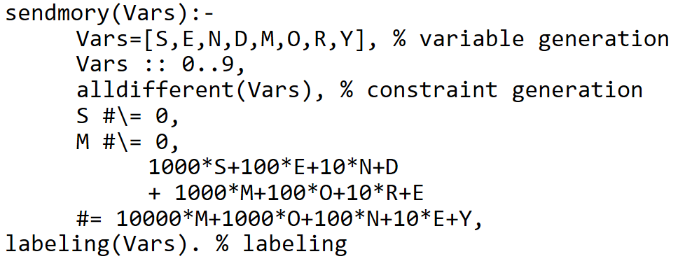
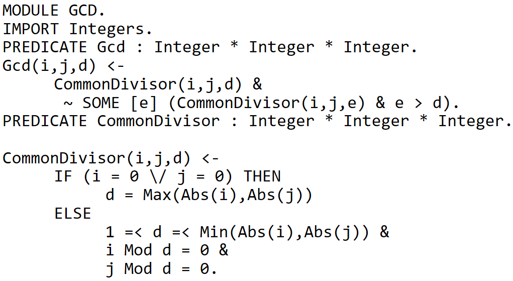
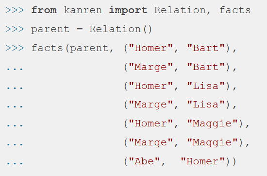
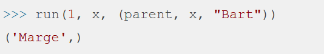
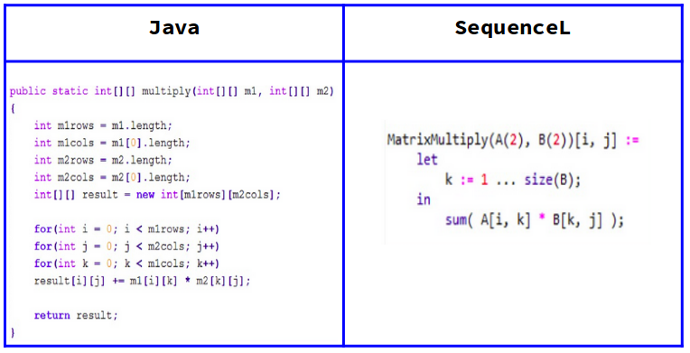
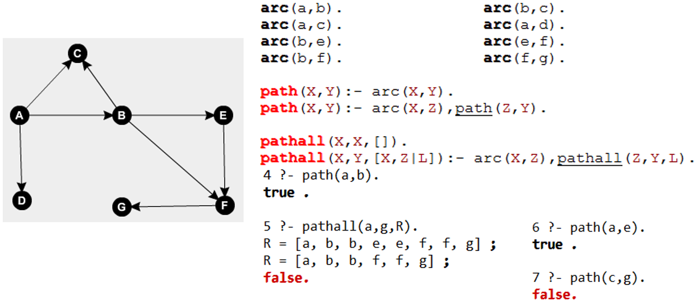
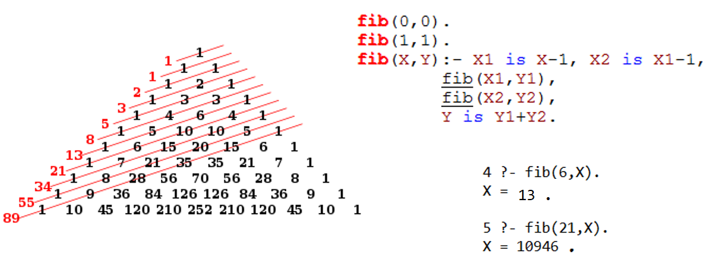

Lenguajes:
Los siguientes son algunos de los lenguajes de programación que emplean como paradigma la programación lógica.
Ejemplos en SWI-Prolog listos para ejecutar.
Prolog:
Es un Lenguaje de Programación diseñado para representar y utilizar el conocimiento que se tiene sobre un determinado dominio. Los programas en Prolog responden preguntas sobre el tema del cual tienes conocimiento.
La popularidad del lenguaje se debe a su capacidad de deducción y además es un lenguaje fácil de usar por su semántica y sintaxis. Solo busca relaciones entre los objetos creados, las variables y las listas, que son su estructura básica.
Escribir un programa en Prolog consiste en declarar el conocimiento disponible acerca de objetos, además de sus relaciones y sus reglas, en lugar de correr un programa para obtener una solución, se hace una pregunta, el programa revisa la base de datos para encontrar la solución a la pregunta, si existe mas de una solución, Prolog hace un barrido para encontrar soluciones distintas. El propio sistema es el que deduce las respuestas a las preguntas que se le plantean, dichas respuestas las deduce del conocimiento obtenido por el conjunto de reglas dadas.

Mercury:
Mercury es un lenguaje de alto nivel (es decir, no se preocupa de problemas como la reserva y liberación de memoria) derivado de Prolog, pero con una implementación que le hace ser más útil para representar y tratar problemas del mundo real. Combina toda la expresividad del lenguaje declarativo con avanzadas técnicas de análisis estático y detección de errores. Es un lenguaje compilado, lo que le permite detectar numerosos errores antes de poder ejecutar la aplicación. El compilador “traduce” el programa de lenguaje Mercury a C, que es un lenguaje portable a cualquier plataforma. Además, al igual que el lenguaje de Gödel, Mercury es un lenguaje que utiliza módulos, lo que da una gran modularidad en el desarrollo de aplicaciones, solventando así uno de los mayores problemas a los que se enfrentaban los lenguajes de programación lógicos.

 “det” indica
una vez, “semidet” como mucho una vez, “multi” al menos una vez y “nondet” un número arbitrario de
veces El compilador comprobará que se cumple y, en caso contrario, rechazará el programa.
“det” indica
una vez, “semidet” como mucho una vez, “multi” al menos una vez y “nondet” un número arbitrario de
veces El compilador comprobará que se cumple y, en caso contrario, rechazará el programa.

CLP (FD)
Otra extensión de Prolog, especializado en los problemas CSPs (Constraint Satisfaction Problem). De forma general, podemos decir que un programa en CLP(FD) consta de tres partes: “generación de variables” (donde también se especifica su domino), “definición de restricciones” (sobre las variables) y “labeling”, donde se instancian las variables por enumeración.
Ejemplo: SEND MORE MONEY puzzle: Godel
Gödel es un lenguaje en el que las sentencias lógicas llevan un orden y en el que existe el polimorfismo. Está basado en módulos (que aceptan polimorfismo) y en tipos de datos (soporta enteros y racionales con una precisión infinita, y número en coma flotante) y tiene una amplia librería de módulos predefinidos.
Es un buen lenguaje para tareas de meta-programación, tales como compilación, depuración, análisis, verificación o transformación de programas, ya que es mucho más declarativo que Prolog, por ejemplo. Como curiosidad, se puede destacar que este lenguaje no funciona en un entorno Windows.
Ejemplo: Máximo Común Divisor: miniKanren
miniKanren es un lenguaje específico de dominio incorporado para la programación lógica.
El lenguaje central miniKanren es muy simple, con solo tres operadores lógicos y un operador de interfaz. miniKanren se ha implementado en un número creciente de lenguajes de host, incluidos Scheme, Racket, Clojure, Haskell, Python, JavaScript, Scala, Ruby, OCaml y PHP, entre muchos otros idiomas.
miniKanren está diseñado para ser modificado y ampliado fácilmente; las extensiones incluyen la Programación Lógica de Restricciones, programación de lógica probabilística, programación lógica nominal y presentación.
A continuaccion un ejemplo de la implementacion de esta libreria en python con un enfoque de pade hijo.
Ahora tratemos de obtener un padre de Bart.
Ahora los dos hijos de homero.

SequenceL:
SequenceL es un lenguaje de programación funcional de propósito general que permite la paralelización automática, su objetivo principal es mejorar el rendimiento de los procesadores con varios núcleos. Es un lenguaje, que, aunque tiene muchas herramientas de paralelización, está enfocado en la facilidad de programación para el usuario. Su principal ventaja es que permite escribir código común, y el software se encarga de maximizar el rendimiento del procesador, por medio de programación paralela. Sin embargo, aunque parece un lenguaje perteneciente a otro tipo de paradigma de programación, se caracteriza porque basa su lógica en hechos, reglas y consultas. Lo cuál lo hace un lenguaje con mucho potencial y muy diferente a los otros lenguajes aquí mencionados.
A continuación, una pequeña tabla que muestra las diferencias entre SequenceL y otro lenguaje popular, Java, permitiendonos ver la facilidad de escritura de código:

Otros Ejemplos:
- Grafos dirigidos en Prolog, busqueda de caminos: 
- Serie Fibonacci en Prolog: 
- Serie Fibonacci en Mercury:

- Juego de ahorcado en ProLog:

- Algoritmo merge sort en ProLog:

-